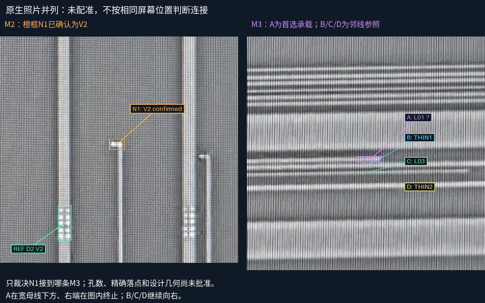
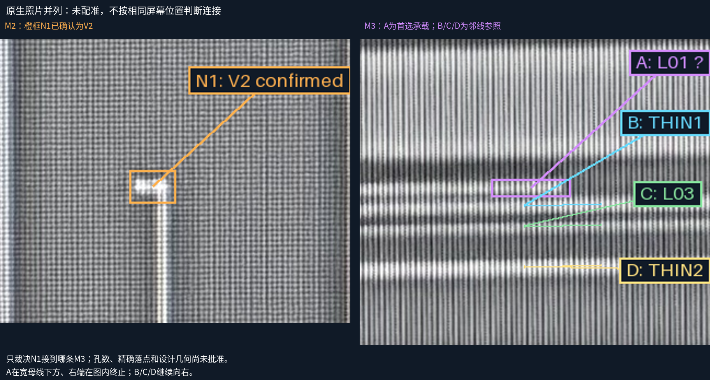
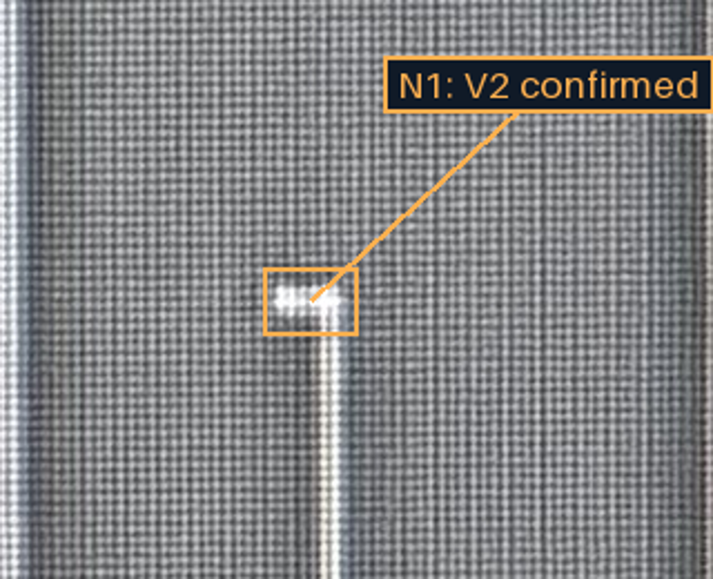
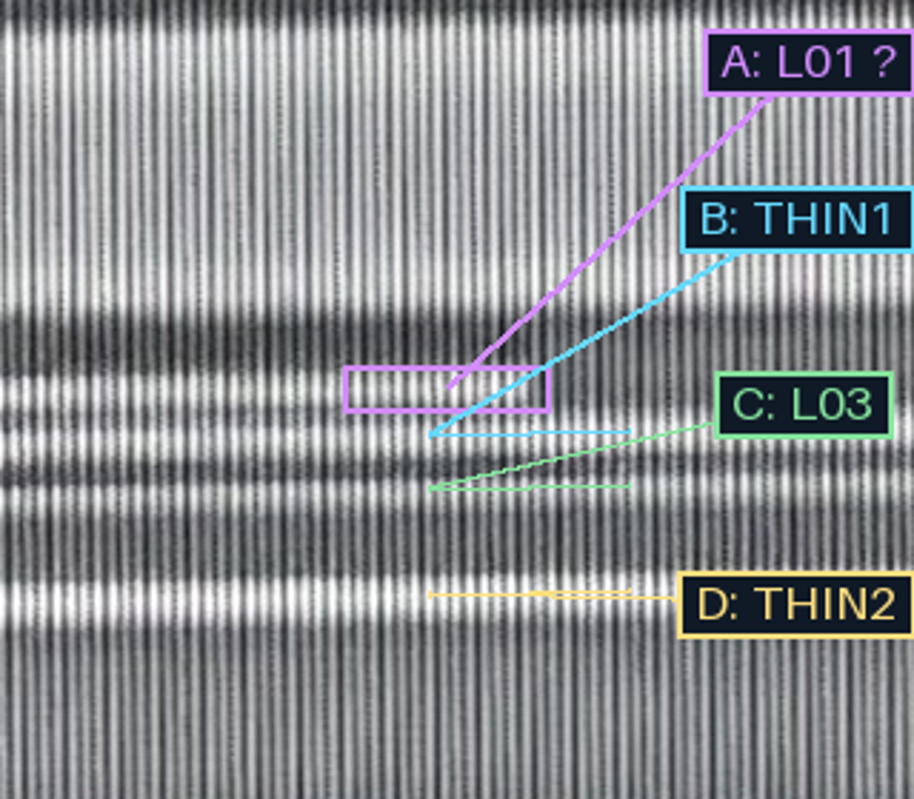
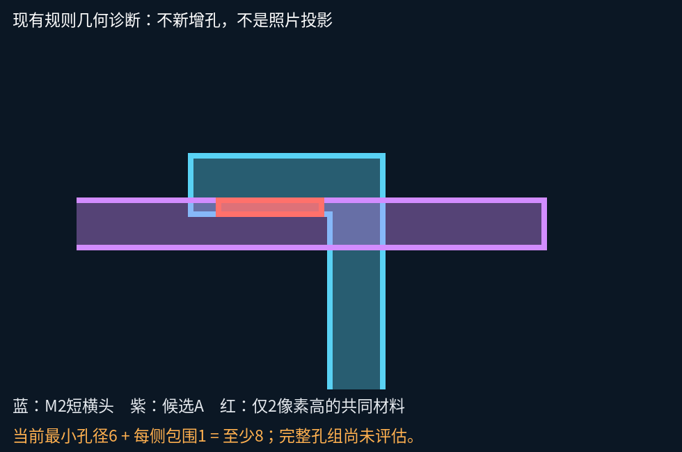

N1的V2身份已审。首选为A/C-M3-L01；跨帧精确对应仍需人工裁决。以下是独立原生照片并列，没有投影。
孔数、落点、几何修订和完整孔组包围均未批准。05/06局部不直连的裁决保留。




蓝色M2短头与紫色候选A的共同材料高度仅2设计像素；按当前孔径6、每侧包围1，至少需要8。不能把孔移到竖干凑通过。完整孔组包围尚未评估。

下一步：先裁决A承载，再定位完整来源孔组并作有来源依据的局部几何修订。